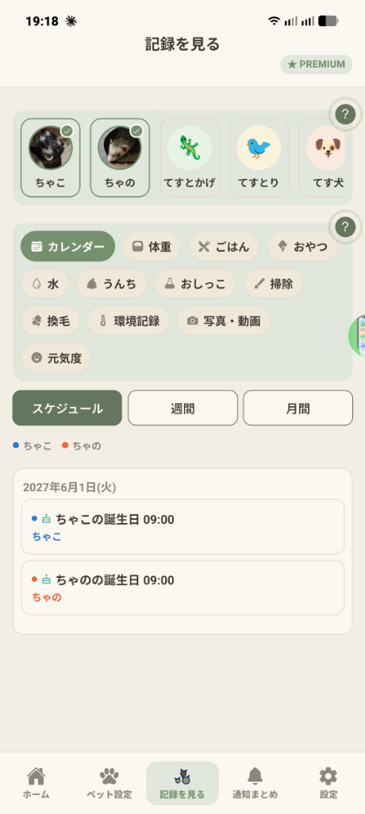

Q. 複数のペットの予定や体重を同時に見比べるにはどうすればよいですか？
画面一番上のペット一覧で、見比べたいペットを複数タップして✓を付けるだけで、下の表示が複数ペットの比較表示に切り替わります。
下部タブの「記録を見る」では、ペットを1匹または複数選んで、今後の予定（カレンダー）や日々のお世話記録（グラフ・色分けカレンダー・一覧）を確認できます。

画面上部に登録済みのペットが並びます。アイコンをタップすると選択状態（右上に緑の✓マークと枠線）になり、複数のペット（例：ちゃこ、ちゃの）を同時に選ぶことができます。
複数選択すると、下の予定一覧やグラフでペットごとに色分け（青い丸・オレンジの丸など）して並べて比較できます。
2段目のボックスには、「カレンダー」に加えて、お世話記録設定で「記録」をオンにした項目（体重・ごはん・おやつ・水・うんち・おしっこ・掃除・換毛・環境記録・写真/動画・元気度などの作成した項目）が並びます。
見たいチップをタップすると、下の表示がその項目の内容に切り替わります。
・「カレンダー」チップ選択時：「スケジュール」「週間」「月間」の3つのボタンで予定の見方を切り替えられます。スケジュールでは日付ごとに予定と対象ペットが一覧表示されます。
・体重や体調などの項目チップ選択時：「グラフ（1日ごとの推移）」「カレンダー（状態ごとの色分け）」「一覧（記録の編集・削除）」に切り替えて詳しく振り返れます。
画面一番上のペット一覧で、見比べたいペットを複数タップして✓を付けるだけで、下の表示が複数ペットの比較表示に切り替わります。
選択中のペットで「記録」がオンになっている項目だけが表示されます。「お世話記録設定」でその項目の「記録」にチェックを入れてください。
無料プランでは直近5日間のグラフ・カレンダーを表示でき、PREMIUMにアップグレードすると2週間・1ヶ月・3ヶ月・6ヶ月の長期推移も確認できます。
修正したい項目のチップをタップし、「一覧」タブを開くと、各記録の編集・削除が行えます。